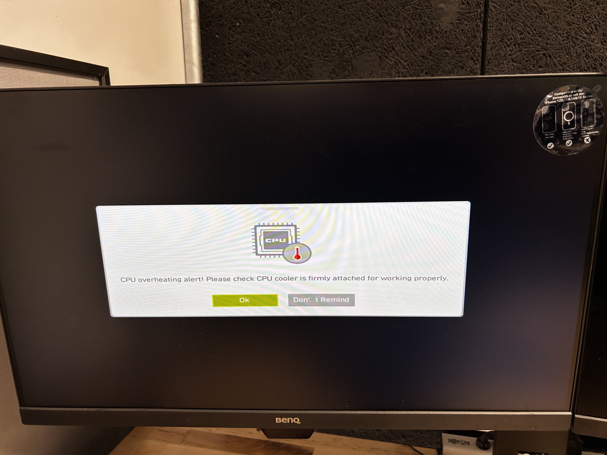
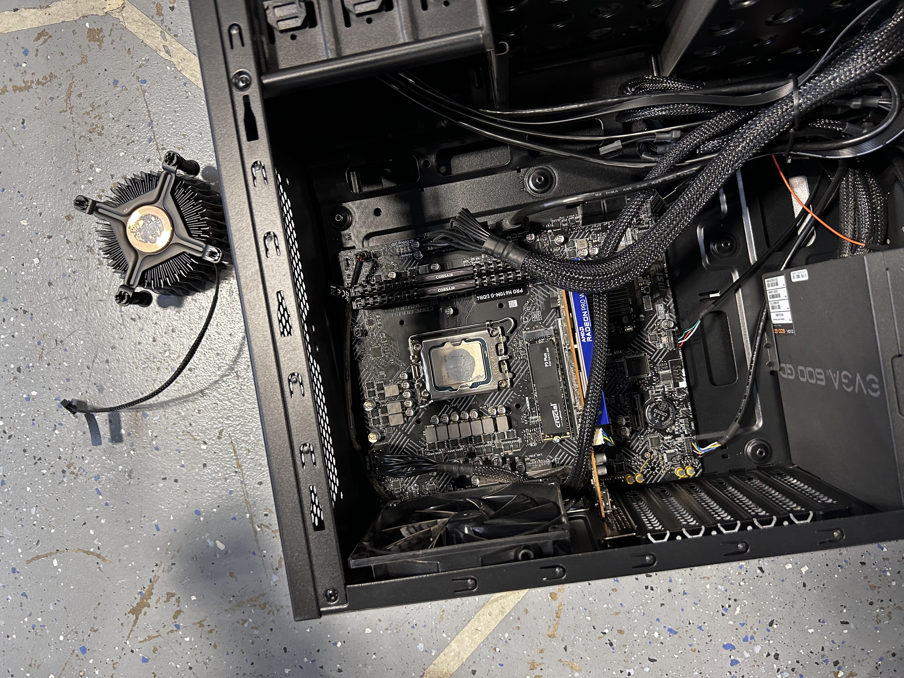
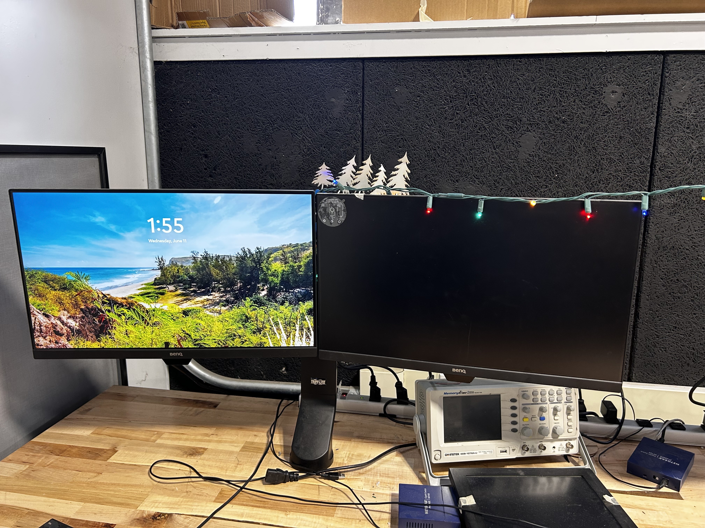
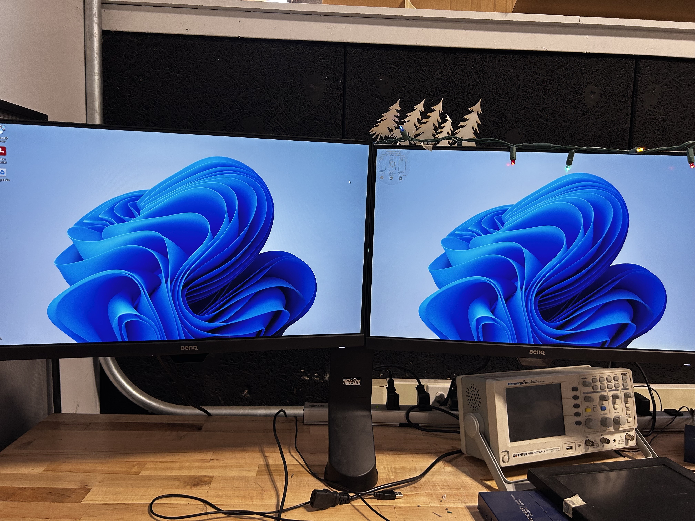
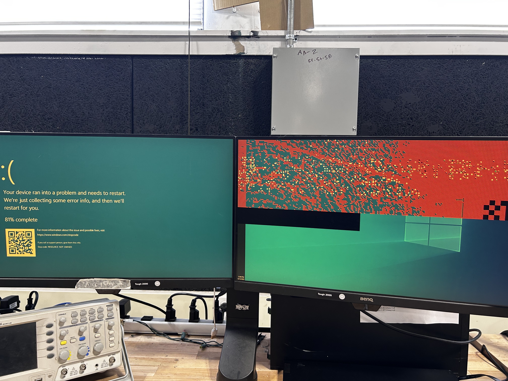

soph week 6/9-6/13
needed a break from my zeromouse project, so i decided to help mr. christy reimage some of the computers with windows 11, as fusion is cutting support for win10. as a result, all the computers needed to be updated to win11 before the end of the school year.
overheating issue
while mr. christy was looking in the bios to change the boot priority order, both me and miles noticed that the cpu was idling at 90+ degrees celsius, temperature that it should only reach when under full loads. along with this, there were also numerous errors saying that the cpu was overheating.
the error that we got telling us that the cpu was overheating
as a result, we assumed that the cpu wasn’t getting proper cooling, so me and miles decided to open up the computer and looked for the problem. instantly, we noticed that the cpu cooler wasn’t making direct contact with the cpu, but just in case, we also decided to repaste the cpu.
the cpu fan came off way to easily since it wasn’t properly “screwed” in.
so after some repasting and correctly screwing the fan back in (also why don’t intel cooler fans just use screws, that stupid mechanism took so long to work with), the temperatures were looking way better than before.
post screen
mr. christy also mentioned that he wanted to see the post information so he didn’t have to guess which key it was to enter the bios, so i enabled that.
however, msi motherboards boot too quickly that you can’t read any of the post screen information. even with a delay in the boot time, it wasn’t enough to read the information listed.
additionally, for some reason having post enabled would also lock the screen resolution to 1024x768, which wasn’t ideal. because of this, both mr. christy and i decided it wasn’t worth enabling post information.
windows 11 installation
the windows 11 installation went pretty smoothly, with the only problem being the lack of graphics drivers, so i had to install those.
a quick driver installation and the second monitor got a display
my computer issues
i originally didn’t want to install win11 yet as i wanted to keep my linux partition, but my computer had a few issues.
on thursday, i wanted to get a bit more done on my zeromouse, but when i tried to open fusion, this happened:
this would continue happening only on fusion for some reason, but because of this, i decided i was going to reimage my computer after finishing my blog post on linux.
however, when i booted into linux, i had similar problems. the screen would be janky, and it seemed like it wanted to freeze at time. because of this, i decided to cut power and just let the computer sit without power for a bit, and turned it on a bit after. however, when i tried to boot into linux again, i got this message.
my c drive is probably (definitely) corrupted, so i tried installing win11 on it, but it also didn’t work (kept saying the image on the usb was corrupted)
so now i’m just stuck with a broken computer, and my website is a mess. gotta fix a lot of things